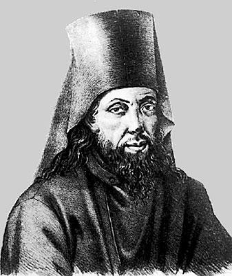
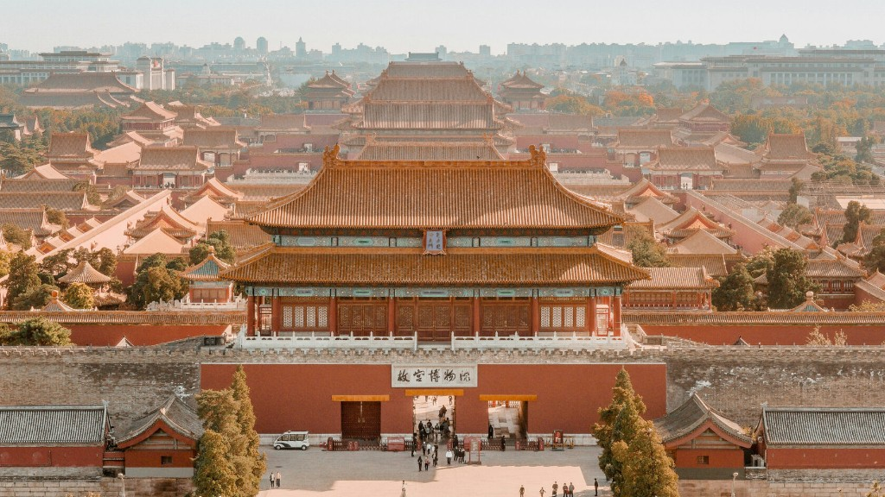

Ранние годы
Родился в 1777 году в Чувашии. Получил духовное образование, рано проявил интерес к языкам и истории.
Личность и эпоха
Никита Яковлевич Бичурин (Иакинф) - выдающийся русский китаевед, переводчик и историк. Он соединил европейскую и восточную научные традиции и оставил большое научное наследие.
Читать биографию
Родился в 1777 году в Чувашии. Получил духовное образование, рано проявил интерес к языкам и истории.
С 1808 года много лет работал в Пекине в составе духовной миссии, где собрал ценный материал по истории и культуре Китая.
После возвращения публиковал труды, которые заложили основу российского китаеведения и повлияли на историческую науку XIX века.

